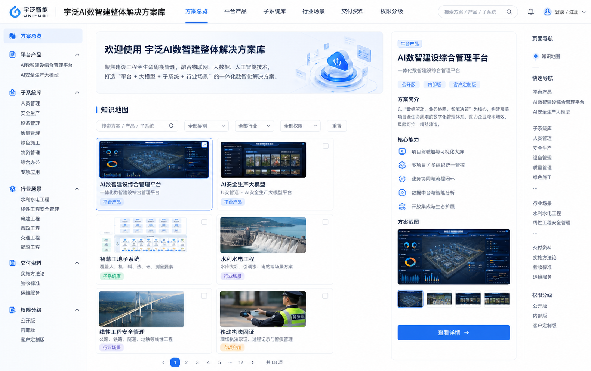

全库检索
按关键词、类型和权限筛选方案、平台、子系统、资料和素材。
解决方案
把正式方案、行业方案和专项应用沉淀为可持续维护的方案条目。
平台产品
平台级产品独立沉淀，与子系统同级管理，便于后续补充截图、版本、接口和能力说明。
子系统库
每个子系统保留系统概述、系统组成、核心功能、系统亮点、应用价值五段式正文。
文档资料
登记正式方案、源材料、实施交付、验收标准和运维响应资料。
素材库
首批导入 PPT 渲染预览图和平台概念图，后续可继续补充产品截图、设备图和现场图。
数据表结构
当前为静态 JSON 数据库，后续可平滑迁移为真实数据库或后台管理系统。
权限分级
公开 GitHub Pages 只能展示内容分级标签，不能替代真实账号权限。